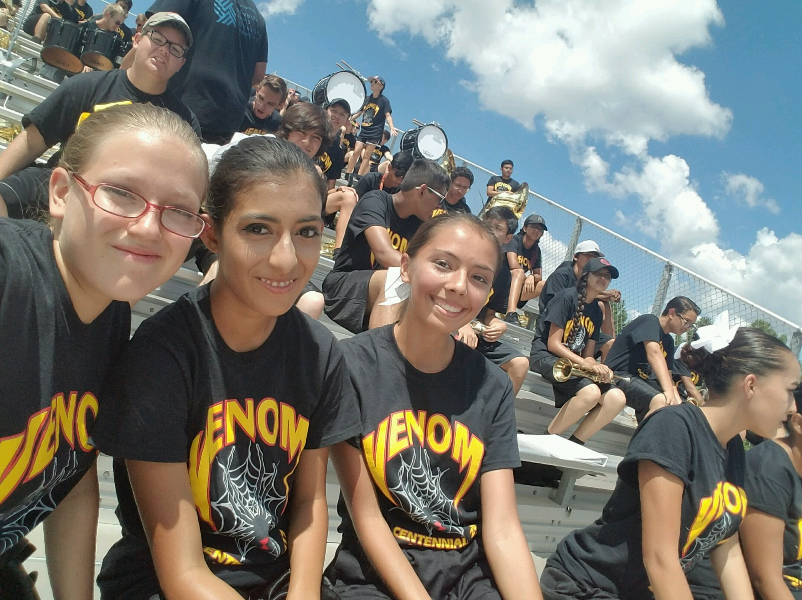
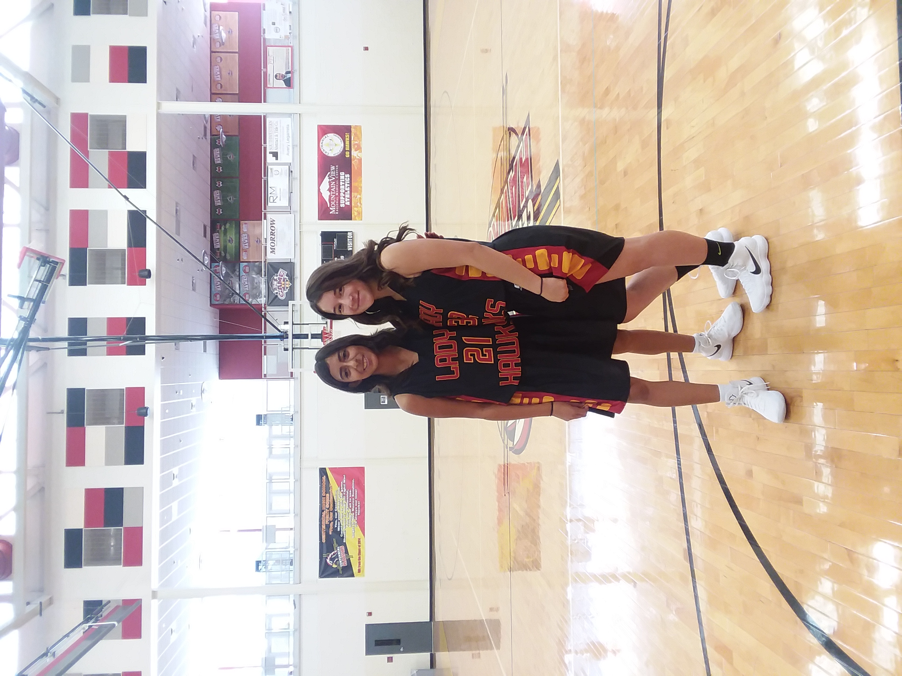
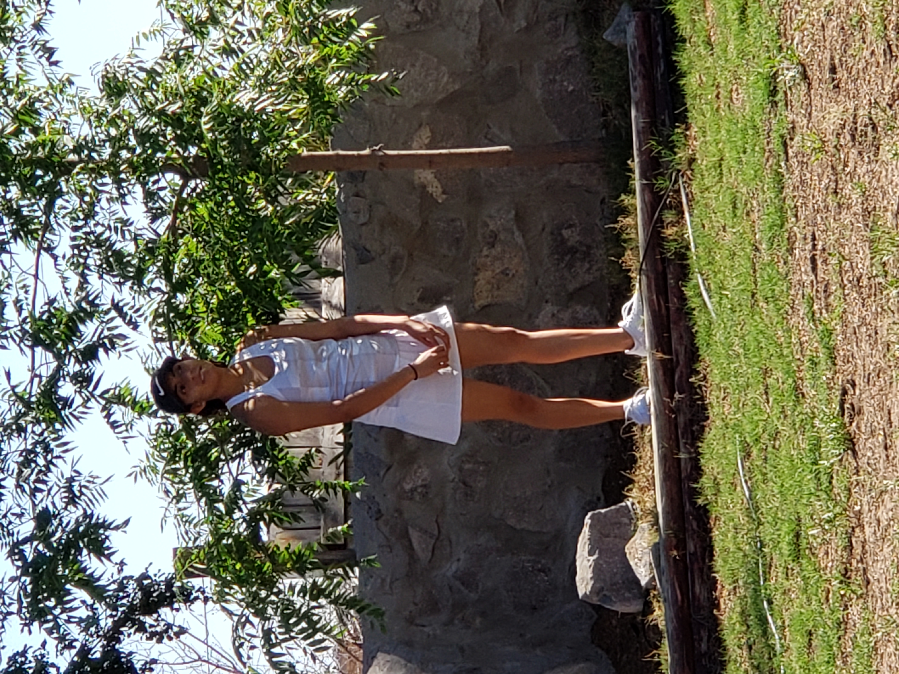

My Fitness & Sport
My love for fitness began in high school. I was involved in basketball and was also part of the color guard for five years.
Color Guard
I started color guard at Centennial High School for two years before transferring to Oñate High School for the remaining two years. I continued color guard in my sophomore year of college as well. During this time, I developed skills in dance, balance, and movement. I also helped a friend start a small program to teach elementary school kids color guard, which was a unique and unexpected experience for me.

Basketball & Tennis
I played basketball for two years but eventually quit for various reasons. However, I enjoyed the friendships I made and learned a lot about teamwork and dedication. Later, I picked up tennis, which helped improve my agility and reaction time. Unlike basketball, tennis taught me the importance of self-improvement, as it was more of an individual sport.
 Over time, I shifted my focus toward strength training, agility, and maintaining my overall health. Fitness has remained a consistent part of my life, and I continue to challenge myself to improve.